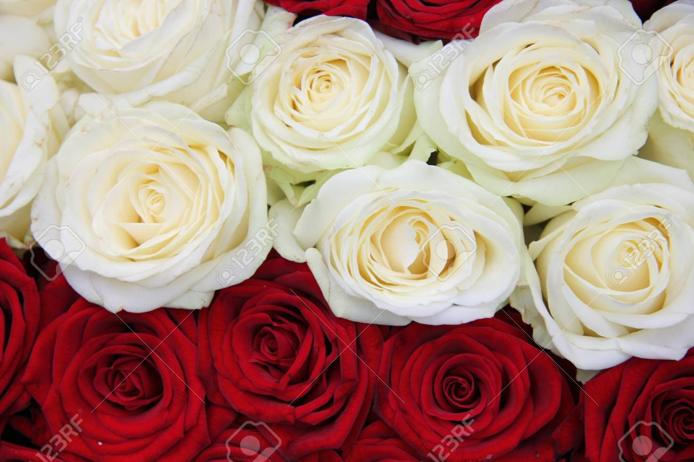

Las Flores que ofrecemos son:
| ROSA | LIRIO | TULIPÁN |
|---|---|---|
|  | ||
La rosa es quizás una de las flores más reconocidas y populares en todo el mundo. Con sus pétalos suaves y delicados, la rosa viene en una amplia gama de colores, desde el clásico rojo pasión hasta el delicado rosa , el vibrante amarillo y el puro blanco. Además de su belleza visual, la rosa también es apreciada por su aroma dulce y distintivo. Se ha asociado durante mucho tiempo con el amor, la pasión y el romance, lo que la convierte en una opción popular para regalos románticos y ocasiones especiales como bodas y aniversarios. |
El lirio es una flor elegante y majestuosa que se destaca por sus tallos altos y sus flores grandes y llamativas. Con sus pétalos acampanados y sus colores vibrantes, como el blanco puro, el rosa suave y el amarillo brillante, el lirio agrega un toque de gracia y sofisticación a cualquier arreglo floral. Además de su belleza estética, el lirio también tiene un aroma distintivo y encantador. Se asocia comúnmente con la pureza, la inocencia y la renovación, lo que lo convierte en una opción popular para celebrar ocasiones como nacimientos, bautizos y bodas. |
El tulipán es una flor primaveral encantadora conocida por su forma única y sus brillantes colores. Con sus tallos delgados y sus pétalos en forma de copa, el tulipán viene en una amplia variedad de tonos, desde el rojo intenso y el amarillo brillante hasta el morado profundo y el blanco puro. Esta diversidad de colores y formas hace que los tulipanes sean una opción versátil para arreglos florales y decoraciones. Además de su belleza visual, el tulipán también es apreciado por su elegancia simple y su simbolismo de amor y felicidad, lo que lo convierte en una opción popular para una amplia gama de ocasiones, desde cumpleaños y aniversarios hasta eventos formales y celebraciones de primavera. |